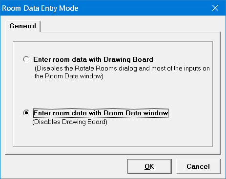
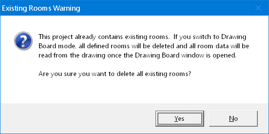
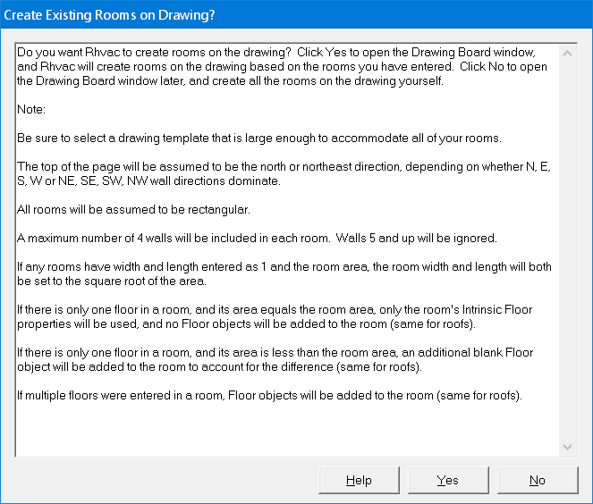

Room Data Entry Mode (Project Menu, Room Menu) |
  
|
Room Data Entry Mode (Project Menu, Room Menu) |
|
Icon: . Keyboard Shortcut: ALT, P, E
Opens the Room Data Entry Mode dialog, which sets the project to be in a state where room data can either be entered with the Room Data window or the Drawing Board window.
Note: It is possible to change from one mode to the other even after you have created rooms in a project, but if you change from the Room Data window mode to the Drawing Board mode, all data previously entered on the Room Data window will be removed and the project will be completely redefined from the drawing.

Warning About Existing Rooms: If you open the Room Data Entry Mode dialog in a project that already has at least one room defined already, the following warning will be shown on this dialog: "Warning: Existing rooms have already been created in this project. Before changing the mode here, be sure to first create a copy of your project, and then change the mode on the copy instead of the original."
If you have already entered rooms on the Room Data window in the current project, and you then use the Room Data Entry Mode dialog to switch to Drawing Board mode, you may choose to let the program attempt to create your rooms for you on the Drawing Board window, based on the data you have entered already. First, the following Existing Rooms Warning dialog will be shown:

If you click Yes on the above window, then the Create Existing Rooms on Drawing window will open:

If you click Yes on the above window, the New Drawing Options window will open, letting you select how to save your Drawing Board data, followed by the New Drawing dialog, which lets you select a template for the new drawing. Then the Drawing Board window will open, and you will see the program create your rooms on the drawing.